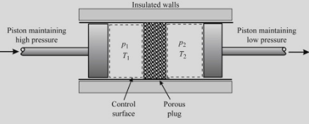
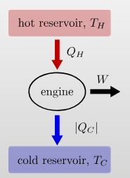
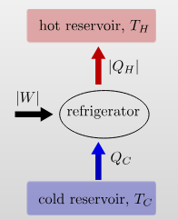
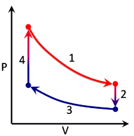
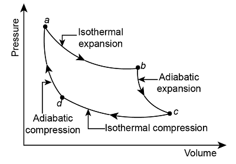
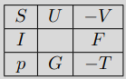
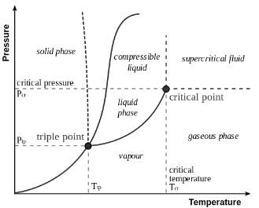
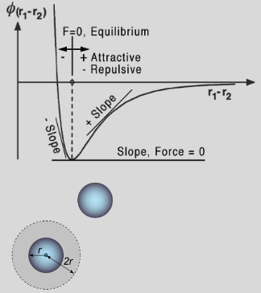
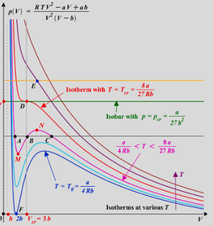

Zeroth Law of Thermodynamics: If system A is in mutual thermal equilibrium with system B and with system C, then system B is in mutual thermal equilibrium with system C.
Assuming negligible effect of pressure, we may write that the linear expansion coefficient is \[\alpha_\ell=\frac{1}{\ell}\frac{d\ell}{dT}\] where \(\ell\) is a paticular length measurement, such that the change in the linear dimension can be estimated to be \[\frac{\Delta\ell}{\ell}=\alpha_\ell\Delta T.\] This equation works as long as the linear expansion coefficient is relatively stable over \(\Delta T\) and that \(\Delta\ell/\ell\ll 1\). If these are not the cases, we must use integration.
For isotropic materials the volumetric thermal expansion coefficient is three times the linear coefficient \[\alpha_V=3\alpha_\ell.\] As \(V=\ell^3\), we have that \(V+\Delta V=(\ell+\Delta\ell)^3\). We can expand this and then approximate \[V+\Delta V\approx V+3V\frac{\Delta\ell}{\ell}.\] We can use the substitutions for isotropic materials \(\Delta V=\alpha_V\ell^3\Delta T\), and \(\Delta\ell=\alpha_\ell\ell\Delta T\) to find \[V\approx\ell^3+3\ell^3\alpha_\ell\Delta T\]
The equation of state is only defined if state variables are defined. The system has to be in thermodynamic equilibrium. The equation of state for an ideal gas is \[pV=\nu RT=\nu k_BT.\] The equation of state for a van der Walls gas is \[\left(p+\frac{an^2}{V^2}\right)(V-nb)=\nu RT\] The equation for tension in stretched elastic substance \[F=\kappa T\left(\frac{\ell}{\ell_0}-\frac{\ell_0^2}{\ell^2}\right)\]
Let the state of system to be described by \(\mathbf{x}=(x_1,x_2,\ldots,x_n)\). Let \(f(\mathbf{x})\) be a function of state. The change in \(f\) between two states is \[\Delta f=\int^{\mathbf{x}_\text{fin}}_{\mathbf{x}_\text{in}}df=f(\mathbf{x}_\text{fin})-f(\mathbf{x}_\text{in}).\] Obviously this quantity is path independent. The quantity \(df\) is an exact differential. E.g. for \(f=xyz\) \[df=yz\,dx+xz\,dy+zy\,dz\]
For a generalised E.O.S. \(f(x,y,z)=0\), this suggests that only two variables are independent hence \(z=z(x,y)\) we can write \[dz=\left(\frac{\partial z}{\partial x}\right)_y\,dx+\left(\frac{\partial z}{\partial y}\right)_x\,dy\] Similar to \(z=z(x,y)\) we can write \(y=y(x,y)\) and hence \[dy=\left(\frac{\partial y}{\partial x}\right)_z\,dx+\left(\frac{\partial y}{\partial z}\right)_x\,dz\] We then can substitute this into the previous equation \[dz=\left(\frac{\partial z}{\partial y}\right)_x\left(\frac{\partial y}{\partial z}\right)_xdz+\left\{\left(\frac{\partial z}{\partial x}\right)_y\,+\left(\frac{\partial z}{\partial y}\right)_x\left(\frac{\partial y}{\partial x}\right)_z\right\}\,dx\] The terms multiplying \(dz\) give the reciprocal relation: \[\boxed{\left(\frac{\partial z}{\partial y}\right)_x=\left(\frac{\partial y}{\partial z}\right)_x^{-1}}\] and the terms multiplying \(dx\) let us find the cyclical relation: \[\boxed{\left(\frac{\partial z}{\partial y}\right)_x\left(\frac{\partial y}{\partial x}\right)_z\left(\frac{\partial x}{\partial z}\right)_y=-1}\]
Calculate increase in tension \(\mathcal{F}\), for a clamped wire of length \(\ell\), when temperature changes from \(T_1\) to \(T_2\). Generic E.O.S is \(f(\mathcal{F},\ell,T)=0\implies\mathcal{F}=\mathcal{F}(\ell,T)\), thus \[d\mathcal{F}=\left(\frac{\partial\mathcal{F}}{\partial\ell}\right)_T\,d\ell+\left(\frac{\partial\mathcal{F}}{\partial T}\right)_\ell\,dT\] For a clamped wire \(d\ell=0\) thus \[\Delta\mathcal{F}=\mathcal{F}_2-\mathcal{F}_1=\int^{T_2}_{T_1}\left(\frac{\partial\mathcal{F}}{\partial T}\right)_\ell\,dT\] We can use the cyclical relation, and then definition of linear expansion coefficient and the Young's modulus to find \[\Delta\mathcal{F}=-\int^{T_2}_{T_1}\left(\frac{\partial\ell}{\partial T}\right)_\mathcal{F}\left(\frac{\partial\mathcal{F}}{\partial\ell}\right)_T\,dT\] thus \[\Delta\mathcal{F}=-YA\alpha_\ell(T_2-T_1)\]
A thermodynamic process is a passage of a thermodynamic system from an initial to a final state of thermodynamic equilibrium.
We can only determine changes of functions of state, like the internal energy \(U\) or entropy \(S\), when processes that take place are quasistatical.
Heat is the energy which spontaneously passes from a warmer body to a cooler one. It must be distinguish from work or matter transfer.
Heat (thermal) flux is the rate of heat energy transfer through a given surface per unit time \[J_H=\lim_{\Delta A\to0}\frac{dI_H}{dA}\] where \[I_H=\frac{dQ}{dt}\] is the heat flow (heat current).
Radiation is the transfer of heat through electromagnetic waves. We have the Stefan-Boltzmann law of blackbodies \[J_H=\epsilon\sigma T^4,\quad\epsilon\in[0,1]\] where \(\epsilon\) is emmisivity for the real "grey" bodies. Conduction is the direct flow of heat through a material in contact. \[J_H=-\kappa\frac{\partial T}{\partial x}\] We also have the equation for temperature. \[\rho c_v\frac{\partial T}{dt}=\frac{\partial}{\partial x}\left(\kappa\frac{\partial T}{\partial x}\right)\] Convection (via fluid) is a heat transfer between a surface and adjacent fluid and by the flow of fluid from one place to another, induced by temperature \[I_H=\frac{d(mC_p\Delta T)}{dt}=v\rho C_p\Delta T\] which implies \[J_H=v\rho C_p\Delta T\]
Suppose the gas in a piston cylinder expands so that the piston moves upwards by \(dx\), the elementary work done by the gas is \[\delta W=\mathcal{F}\,dx=(pA)\,dx=p\,dV\] Hence the net work done from \(a\) to \(b\) is simply \[W=\int^{V_b}_{V_a}p(V)\,dV\] We have the sign convention of work done BY the system is POSITIVE. I.e. expansion. Work has a path dependence, moreover net work done in a closed loop is not zero.
Stretched wire at a tension \(\mathcal{F}\): \[\delta W=-\mathcal{F}\,d\ell\] Surface tension of a thin film system with tension \(\gamma\) and area \(A\): \[\delta W=-\gamma\,dA\]
Isothermal, isobaric and isochoric processes are obvious here.
We have the process equation \(pV^\gamma=\text{const}=\beta\) where \(\gamma=C_p/C_V\) is the adiabatic exponent. Hence \[\delta W=\frac{\beta}{V^\gamma}dV\implies W=\beta\int^{V_f}_{V_i}V^{-\gamma}\,dV=\frac{\beta}{1-\gamma}V^{1-\beta}\]
We have the process equation \(pV^\alpha=\text{const}=\beta\) where \(\alpha=(C-C_p)/(C-C_V)\) is the polytropic index. Hence \[W=\beta\int V^{-\alpha}\,dV\qquad Q=\int C\;dT\]
The first law of thermodynamics states energy conservation. \[\boxed{Q=\Delta U+W\quad\iff\quad\delta Q=dU+\delta W}\] Lets use this in an example
Joule-Thompson (Kelvin) process is a process in which a gas at pressure \(p_1\) forced through a valve or porous plug into a region of lower pressure \(p_2\), while kept insulated so that no heat is exchanged with the environment. The experiment demonstrates that temperatures are the same from the both sides of the plug; thus for an ideal gas the internal energy is a function of temperature only!

Net work done by the system \(W_\text{net}=W_\text{right}-W_\text{left}\). \[\left\{\begin{align}&Q=\Delta U+W\\&Q=0\end{align}\right.\implies U_R-U_L+p_2V_2-p_1V_1=0\] This implies \[\underbrace{U_R+p_2V_2}_{I_R}=\underbrace{U_L+p_1V_1}_{I_L}\] (\(I_L=I_R\equiv\text{const}\) is the enthalpy.) From E.O.S. \(f(p,V,T)=0\) thus \(p=p(V,T)\) thus \(U(p,V,T)=U(V,T)\). Since \[\left\{\begin{align}&I_L=I_R\\&T_1=T_2=T\end{align}\right.\implies U_L(V_1,T)=U_R(V_2,T)\] This implies \(V\) is an arbitrary hence \(\boxed{U=U(T)}\)
Heat capacity is the ratio between heat added to the system and temperature change of the system: \[C=\frac{dQ}{dT}=\frac{dU+pdV}{dT}\] Hence \[C=\frac{1}{dT}\left\{\left(\frac{\partial U}{\partial T}\right)_VdT+\left(\frac{\partial U}{\partial V}\right)_TdV+p\,dV\right\}\] this implies \[\boxed{C=\left(\frac{\partial U}{\partial T}\right)_V+\left\{\left(\frac{\partial U}{\partial V}\right)_T+p\,\right\}\frac{dV}{dT}}\] We use these to define \[\text{Isochoric}\quad\boxed{C_V=\left(\frac{\partial U}{\partial T}\right)_V}\] \[\text{Isobaric}\quad C_p=\left(\frac{\partial U}{\partial T}\right)_V+\left\{\left(\frac{\partial U}{\partial V}\right)_T+p\,\right\}\left(\frac{dV}{dT}\right)_p\] And therefore \[\boxed{C_p-C_V=\left\{\left(\pdv{U}{V}\right)_T+p\,\right\}\left(\frac{dV}{dT}\right)_p}\] Note, for an ideal gas \(U=U(T)\), hence \[\left(\frac{\partial U}{\partial V}\right)_T=0\qquad\left(\frac{dV}{dT}\right)_p=\frac{R}{p}\] so we can find \[\boxed{C_p-C_V=R}\] This is Mayer's Formula
Specific heat is a heat capacity per mass \(m\) of the system \[c=\frac{C}{m}\] Molar heat capacity is a heat capacity per amount of matter in the system (moles): \[C_\nu=\frac{C}{\nu}=c\mu\] where \(\mu\) is the molar weight.
An engine uses a hot and cold reservoir to convert heat into work.

It has a efficiency of \[\eta=\frac{W}{Q_\text{in}}=\frac{|Q_H|-|Q_C|}{|Q_H|}\] A refrigerator transfers heat from the cold to the hot reservoir by consuming work.

It has a coefficient of performance \[K=\frac{|Q_C|}{|W|}=\frac{|Q_C|}{|Q_H|-|Q_C|}\]

The stages of the cycle are:
The heat provided into the cycle is \(Q_\text{in}=Q_4+Q_1\), and the work \(W_\text{net}\) is the the sum of the work over each branch of the cycle. \[\begin{align} &W_1=\int^{V_2}_{V_4}p\,dV=RT_H\int\frac{dV}{V}=RT_H\ln\left(\frac{V_2}{V_4}\right)\\ &W_2=0,\;\text{since $V_2$ = const}\\ &W_3=\int^{V_4}_{V_2}p\,dV=RT_C\int\frac{dV}{V}=RT_C\ln\left(\frac{V_4}{V_2}\right)\\ &W_4=0,\;\text{since $V_4$ = const} \end{align}\] hence the net work is \[W_\text{net}=W_1+W_4=R(T_H-T_C)\ln\left(\frac{V_2}{V_4}\right)\] To calculate \(Q_\text{in}\), we can use the first law of thermodynamics and the Joule-Thompson statement \[\begin{align} &Q_1=W_1,\;\text{since $T$=const}\implies Q_1=RT_H\ln\left(\frac{V_2}{V_4}\right)\\ &Q_4=C_V(T_H-T_C)=\frac{R}{\gamma-1}(T_H-T_C) \end{align}\] Hence \[Q_\text{in}=RT_H\ln\left(\frac{V_2}{V_4}\right)+\frac{R}{\gamma-1}(T_H-T_C)\] so \[\eta=\frac{W}{Q_\text{in}}=\left(\frac{T_H}{T_H-T_C}+\ln(V_2/V_4)^{\gamma-1}\right)^{-1}\]

We have \[\left\{\begin{align} &Q_{d\to a}=0\\ &Q_{a\to b}=W_{a\to b}=RT_\text{hot}\ln(V_b/V_a)\\ &Q_{b\to c}=0\\ &Q_{c\to d}=W_{c\to d}=RT_\text{cold}\ln(V_d/V_c)\\ \end{align}\right.\] Thus \[\left\{\begin{align} &W_\text{net}=Q_\text{net}=RT_\text{hot}\ln(V_b/V_a)+RT_\text{cold}\ln(V_d/V_c)\\ &Q_\text{hot}=Q_{a\to b}=RT_\text{hot}\ln(V_b/V_a) \end{align}\right.\] Thus \[\eta=1+\frac{T_\text{cold}\ln(V_d/V_c)}{T_\text{hot}\ln(V_b/V_a)}\] We can use \(pV=RT\) and \(pV^\gamma=\text{const}\): \[TV^{\gamma-1}=\text{const}\implies\frac{V_a}{V_b}=\frac{V_d}{V_c}\] thus \[\eta=1-\frac{T_\text{cold}}{T_\text{hot}}\]
Clausius’ statement: "No process is possible whose sole result is the transfer of heat from a colder to a hotter body."Kelvin’s statement "No process is possible whose sole result is the complete conversion of heat into work."
These statements are equivalent to each other
Every Carnot heat engine between a pair of heat reservoirs is equally efficient, regardless of the working substance employed or the operation details. The efficiency of Carnot cycle depends on the reservoirs temperatures only.
An arbitrary heat engine operates periodically between temperature reservoirs \(T_1\) and \(T_2\). The inequality \[\frac{Q_2}{T_2}+\frac{Q_1}{T_1}\leq 0,\] holds. This can be expanded for different stages \[\oint\frac{\delta Q}{T}\leq 0\] It will be equal to zero for only reversible cycles.
Is a function of state which satisfies \[\Delta S=S_b-S_a=\int^b_a\frac{\delta Q}{T}\]To obtain the absolute value of the entropy, we need the third law of thermodynamics, which states that \(S=0\) at absolute zero temperature. The differential entropy is given by \[dS=\frac{\delta Q_\text{rev}}{T}\]
The entropy of an isolated system always increases. \(\Delta S\geq 0\)
\[dS=\frac{dU+pdV}{T}=\frac{C_VdT+\frac{RT}{V}dV}{T}=C_V\frac{dT}{T}+R\frac{dV}{V}\] hence \[S=C_V\int\frac{dT}{T}+R\int\frac{dV}{V}=C_V\ln T+R\ln V+\text{const}\]
We use the first law and the definition of entropy \(dQ=T\,dS\) to obtain \[\boxed{dU=T\,dS-p\,dV}\] We can also find the total differential of \(U=U(S,V)\): \[dU=\left(\frac{\partial U}{\partial S}\right)_VdS+\left(\frac{\partial U}{\partial V}\right)_SdV\] Thus we find the Maxwell relations: \[\boxed{T=\left(\frac{\partial U}{\partial S}\right)_V}\quad\text{and}\quad\boxed{p=-\left(\frac{\partial U}{\partial V}\right)_S}\] It is also obvious that \[\left(\frac{\partial T}{\partial V}\right)_{S}=\frac{\partial^2U}{\partial S\partial V}=-\left(\frac{\partial p}{\partial S}\right)_{V}\]
We have \[I=U+pV\implies dI=T\,dS-p\,dV+p\,dV+V\,dp\] thus \[\boxed{dI=T\,dS+V\,dp}\] as before \[dI=\left(\frac{\partial I}{\partial S}\right)_pdS+\left(\frac{\partial I}{\partial p}\right)_Sdp\] thus \[\boxed{T=\left(\frac{\partial I}{\partial S}\right)_p}\quad\text{and}\quad\boxed{V=\left(\frac{\partial I}{\partial p}\right)_S}\] and \[\left(\frac{\partial T}{\partial p}\right)_{S}=\frac{\partial^2I}{\partial S\partial p}=\left(\frac{\partial V}{\partial S}\right)_{p}\]
We have \[F=U-TS\implies dF=T\,dS-p\,dV-T\,dS-S\,dT\] thus \[\boxed{dF=-S\,dT-p\,dV}\] as before \[dF=\left(\frac{\partial F}{\partial T}\right)_VdT+\left(\frac{\partial F}{\partial V}\right)_TdV\] thus \[\boxed{S=-\left(\frac{\partial F}{\partial T}\right)_V}\quad\text{and}\quad\boxed{p=-\left(\frac{\partial F}{\partial V}\right)_T}\] and \[\left(\frac{\partial S}{\partial V}\right)_{T}=\frac{\partial^2F}{\partial V\partial T}=\left(\frac{\partial p}{\partial T}\right)_{V}\]
We have \[G=F+pV\implies dG=-T\,dS-p\,dV+p\,dV+V\,dp\] thus \[\boxed{dG=-S\,dT+V\,dp}\] as before \[dG=\left(\frac{\partial G}{\partial T}\right)_pdT+\left(\frac{\partial G}{\partial p}\right)_Tdp\] thus \[\boxed{S=-\left(\frac{\partial G}{\partial T}\right)_p}\quad\text{and}\quad\boxed{V=\left(\frac{\partial G}{\partial p}\right)_T}\] and \[\left(\frac{\partial S}{\partial p}\right)_{T}=\frac{\partial^2G}{\partial T\partial p}=-\left(\frac{\partial V}{\partial T}\right)_{p}\]
All four thermodynamic potentials and related equations are called canonical equations of state of matter. They were introduced by Gibbs. \[\begin{array}{ll} U=U(S,V) & F=F(T,V)\\ I=I(S,p) & G=G(T,p) \end{array}\] The four thermodynamic variables \(S,T,V,p\) that describe the state of the thermodynamic system and the potentials \(U,I,F,G\) can be presented in the "thermodynamic square":

where the variable surround each thermodynamic potential. You can use mnemonics like "Good Physicists Have Studied Under Very Fine Teachers" - start at the bottom and follow the square anticlockwise.
We can use the first law again with the internal energy equations. \(\delta Q=dU+p\,dV\), and \(U=U(T,V)\) \[\delta Q=\left(\frac{\partial U}{\partial T}\right)_VdT+\left(\frac{\partial U}{\partial V}\right)_TdV+p\;dV\] hence \[\delta Q=\left(\frac{\delta Q}{dT}\right)_VdT+\left(\frac{\delta Q}{dV}\right)_TdV\]
Phase of matter is a region of thermodynamic system through which all physical properties of the matter are exactly uniform. A phase transition is a transformation of thermodynamical system from one phase to another by heat transfer.

Latent heat of the phase transition is the energy required to change the state from one phase to another. The temperature remains constant during a phase transition. The latent heat is referenced to the unit of mass is specific heat of transition, \[\lambda=\frac{Q}{m}\qquad\lambda_\nu=\frac{Q}{\nu}\] Consider the phase transition at the constant pressure and temperature. Gibbs Free energy is convenient thermodynamic potential to describe phase transitions, since its natural variables are \(p\) and \(T\). \[dG=-SdT+VdP\] Gibbs Free energy is constant at phase transition and minimised in single phases. Consider system comprised of two phases, and conversion of one phase into another takes place. The total amount of matter mass is conserved and hence: \[\nu_\text{tot}=\nu_1+\nu_2\implies d\nu_\text{tot}=d\nu_1+d\nu_2=0\]
Total Gibbs free energy of the system is \(G_\text{tot}=\nu_1g_1+\nu_2g_2\), where \(g_i=g_i(p,T)\) is the molar Gibbs free energy of \(i^\text{th}\) phase. From the conservation laws \[\left\{\begin{align}&G_\text{tot}=\text{const}\\&\nu_\text{tot}=\text{const}\end{align}\right.\implies \left\{\begin{array}{l}dG_\text{tot}=d(g_1\nu_1)+d(g_2\nu_2)=0\\d\nu_\text{tot}=d\nu_1+d\nu_2=0\end{array}\right.\] thus \[\implies\left\{\begin{align} &\nu_1dg_1=\nu_2dg_2=0\\ &g_1=g_2 \end{align}\right.\] Molar Gibbs energies are equal at phase transition since both phases in equilibrium and coexist at the transition. We can use \(g_1=g_2\) to find \[\frac{dp}{dT}=\frac{\Delta S}{\Delta V}=\frac{\lambda}{T\Delta V}\]
Remember from A-Level maths \[P(A\cap B)=P(A)P(B)\qquad P(A\cup B)=P(A)+P(B)\] A quantity is said to be Poisson distributed if one obtains the value \(x\) with probability \[P(x)=\frac{e^{-m}m^x}{x!}\] where \(m\) is a paticular number (which is the mean). Entropy is a function of probability \[S=k_B\ln(P_\text{macro})\]
Combinations do not care about order, permutations do! \[\begin{array}{l|c|r} &\textbf{Repetition}&\textbf{No Repeats}\\ \hline \textbf{Combi (nCr)} & \frac{(r+n-1)!}{r!(n-r)!}=\pmatrix{r+n-1\\r} & \frac{n!}{r!(n-r)!}=\pmatrix{n\\r}\\ \hline \textbf{Permu (nPr)} & n^r & \frac{n!}{(n-r)!}=\pmatrix{n\\r} \end{array}\]
A microstate is a certain "state" that a system may be in, where each state has an equal probability of occurring. For instance if i were to flip 100 coins and then document the following table \[\begin{array}{c| ccc } \textbf{Coin} & 1 & 2 & 3 & 4 & \ldots & N\\ \hline \textbf{Result} & \text{H} & \text{H} & \text{T} & \text{H} & \ldots & \text{T}\\ \end{array}\] this would be a paticular microstate of the system. It would have a certain probability of \[P_\text{micro}=\prod^N_{i=1}p_i=\left(\frac{1}{2}\right)^{100}\] This also implies that there a total number of microstates given by \[\mathcal{N}=\frac{1}{P_\text{micro}}=2^{100}\] So this microstate is found by measuring the information of all "particles" within the system.
A macrostate is a set of microstates for a system with the same measurable bulk properties. So for the above example a certain macrosate \[(52\text{H},\;48\text{T})\] describes the set of microstates that have a total count of 52 heads, and 48 tails. The difficulty is that a each macrostate can contain a different number of microstates, e.g. \[\begin{array}{c|cc} \textbf{Macrostate} & (0\text{H},\;100\text{T}) & (1\text{H},\;99\text{T})\\ \hline \#\textbf{Microstates} & 1 & 100\\ \end{array}\] Thus we can define the statistical weight \(G\) which describes how many microstates a macrostate contains such that \[\boxed{P_\text{macro}=GP_\text{micro}}\] For example the statistical weight of the macrostate \((50\text{H},50\text{H})\) would be \[G_{50\text{H}}=\pmatrix{n\\r}=\pmatrix{100\\50}=\frac{100!}{50!(100-50)!}=1\times 10^{29}\] such that \[P_\text{macro}=2^{-100}\times 10^{29}=0.08\] Note that the sum of probabilities of all macrostates is 1. I.e. \(\sum P_\text{macro}=1\).
The number of microstates \(G\) in a macrostate of distinguishable particles is \[G=\frac{N!}{\prod^M_{i=1}N_i!}\] where \(N_i\) is the number of particles in each of the \(M\) categories.
The entropy of a system is \[\boxed{S=k_B\ln\Omega}\] Where \[\Omega=\sum^\text{states}_i G_i\] We can use the definition of \(G\): \[S=\underbrace{k_B\ln(N!)}_{=\text{const}}-k_B\ln\left(\prod^M_{i=1}N_i!\right)\implies S=-k_B\ln\left(\prod^M_{i=1}N_i!\right)\] We can use Sterling's formula for large \(N!\): \[N!\approx\sqrt{2\pi N}\left(\frac{N}{e}\right)^N\] Such that \[S=-k_B\ln\left[\prod^M_{i=1}\sqrt{2\pi N_i}\left(\frac{N_i}{e}\right)^{N_i}\right]\] Then using the log product rule: \[S=-k_B\sum N_i\ln N_i+\text{const}=-k_B\sum P_i\ln P_i\]
We can find (I don't want to derive) that \[\frac{N_i}{N}=\frac{\exp\left(-\frac{\varepsilon_i}{k_BT}\right)}{\sum^\infty_{i=1}\exp\left(-\frac{\varepsilon_i}{k_BT}\right)}\equiv\frac{1}{Z}\exp\left(-\frac{\varepsilon_i}{k_BT}\right)\] where \(Z\) is the sum on the denominator, called the partition function. It states that the number of particles in level \(i\) (\(N_i\)) is dependent on the energy of the level \(\varepsilon_i\), and the systems temperature. We can make expressions easier by defining \(\boxed{\beta=1/k_BT}\) The numerator is just the probability of one particle being in the level with energy \(\varepsilon_i\)
\[Z=\sum_i g_i\exp(-\varepsilon_i\beta)\] where \(g_i\) is the degeneracy of the state \(i\). The partition function \(Z\) is incredibly useful, as it is a sort of wrapper containing all the information needed to calculate any bulk property of the system. \[\begin{align} &U=k_BT^2\frac{d\ln Z}{dT}=-\frac{d\ln Z}{d\beta}\\ &S=k_B\ln Z+\frac{U}{T}\\ &F=-k_BT\ln Z \end{align}\]
The entropy of a system approaches a constant value as the temperature approaches absolute zero. This value is zero for a perfect crystal.
A system of two energy levels \(\varepsilon_0\) and \(\varepsilon_1\) is populated by \(N\) particles at temperature \(T\). The particles populate the energy levels according to the Boltzmann distribution law.
The average energy of a particle \[\langle u\rangle=\varepsilon_0p_0+\varepsilon_1p_1=\frac{\varepsilon_0\exp(-\beta\varepsilon_0)+\varepsilon_1\exp(-\beta\varepsilon_1)}{\exp(-\beta\varepsilon_0)+\exp(-\beta\varepsilon_1)}\] we can use \(\Delta\): \[\langle u\rangle=\frac{\varepsilon_0+\varepsilon_1\exp(-\beta\Delta)}{1+\exp(-\beta\Delta)}\] We can consider limits \[\lim_{T\to0}u\equiv\lim_{\beta\to\infty}u\approx\varepsilon_0\] \[\lim_{T\to\infty}u\equiv\lim_{\beta\to0}u\approx\frac{\varepsilon_0+\varepsilon_1}{2}\] and also heat capacity \[C=N_A\left(\frac{\partial u}{\partial T}\right)_V=N_A\frac{\partial u}{\partial\beta}\frac{\partial\beta}{\partial T}\]
Kinetic energy is a function of momentum \[\varepsilon_i=\frac{\mathbf{p}_i^2}{2m}\] Hence we can represent the M.B.D as a probability density function of momentum. We obviously need to then normalise this so that the probability of any molecule having any momentum is 1. We find \[f_\mathbf{p}(p_x,p_y,p_z)=\underbrace{(2\pi mk_BT)^{-3/2}}_\text{norm const}\exp\left(-\frac{p_x^2+p_y^2+p_z^2}{2mk_BT}\right)\] hence \[f(p_j)=(2\pi mk_BT)^{-1/2}\exp\left(-\frac{p_j^2}{2mk_BT}\right),\quad\text{where}\;j=x,y,z\] This is a normal distribution, with \(\sigma =mk_BT\).
\[\begin{align} \text{most probable:}\quad v_{mp}=\sqrt{\frac{2RT}{\mu}}\\ \text{average:}\quad v_{av}=\sqrt{\frac{8RT}{\pi\mu}}\\ \text{root mean square:}\quad v_{rms}=\sqrt{\frac{3RT}{\mu}} \end{align}\]
The average kinetic energy \(E_j=\frac{p^2_j}{2m}\) for each component of the momentum vector \(p_j\) \[\langle E_j\rangle=\frac{1}{2}k_BT\]
The molecules in monoatomic gas have three degrees of freedom (\(i=3\)). Hence, \[u_\text{mono}=\frac{3}{2}k_BT\implies U_\text{mono}=\frac{3}{2}N_Ak_BT=\frac{3}{2}RT\] The heat capacities are thus \[C_V=\frac{dU}{dT}=\frac{3}{2}R\implies C_p=\frac{5}{2}R\implies\gamma=\frac{5}{3}\] (using \(C_p=C_V+R\))
Similar derivations can be deduced for other types of gases provided you know \(i\).
| Gas | Degrees of Freedom (\(i\)) |
|---|---|
| Monoatomic | 3 |
| Rigid Diatomic | 5 |
| Vibrating Diatomic | 7 |
| Polyatomic | 6 |
In 1907 Einstein suggested that "the simplest idea is that one can form of the thermal motion in solid bodies is that the atoms there off execute harmonic oscillations about their equilibrium positions."
We can find the partition function \[Z=\sum_i\exp(-\beta\hbar\omega(i+1/2))=\exp(-\beta\hbar\omega/2)\sum_i\exp(-\beta\hbar\omega i)\] we define the characteristic Einstein Temperature \(\theta=\hbar\omega/k_B\) \[Z=\exp(-\theta/2T)\sum_i\left(\exp(-\theta/T)\right)^i\] We can use \(\sum_i ar^i=a/(1-r)\) \[Z=\frac{\exp(-\theta/2T)}{1-\exp(-\theta/T)}\] Note this is for a single harmonic oscillator. For a solid of \(N\) atoms, number of oscillators is \(3N\) hence \[Z_\text{solid}=\prod_\text{k=1}^{3N}Z_k=Z^{3N}\]
Assumptions of the ideal gas:
We can use a more realistic model called the Van der Waal's model of a gas. We use the ideal gas model but add a potential such that intermolecular attractive and repulsive forces are added.

For the particles in the inner region of the container the attractive forces from other molecules mostly cancel out. The particles near the walls have an uncompensated attractive force \(f\) directed to the centre of the container. This force is proportional to the concentration of particles in the \[\left\{\begin{align} &n_\text{vol}\quad\text{in the container}\\ &n_\text{bnd}\quad\text{in the boundary layer} \end{align}\right.\implies f\propto n_\text{vol}n_\text{bnd}\propto\frac{1}{V^2}\] The effect of the attraction of the molecules of the near wall layer reduces the pressure on the walls of the container. \[p_\text{ideal}\to p+a\frac{\nu^2}{V^2}\]
The molecules are assumed to have a spherical shape of radius \(r\), and their centres can not come closer to each other than \(2r\). The forbidden volume around one of the two molecules is \[v_\text{excl}=\frac{4}{3}\pi(2r)^3=8v_\text{mol}\] The excluded volume per molecule \(b_0=4v_\text{mol}\) such that the available void space where the molecules can move is: \[V_\text{ideal}\to V-\underbrace{\nu b}_{b_0\nu N_a}\] So we finally find that \[\left(p+a\frac{\nu^2}{V^2}\right)(V-\nu b)=\nu RT\] or explicitly \[\boxed{p=\frac{\nu RT}{V-\nu b}-\frac{a\nu^2}{V^2}}\]
The critical point of a V.dW. gas is the point on a pressure volume graph where the gas and liquid phases merge into a single supercritical fluid phase.

Its the point where \[\left(\frac{\partial p}{\partial V}\right)_{T_c}=\left(\frac{\partial^2p}{\partial V^2}\right)_{T_c}=0\] We can compute these derivative and set them equal to each other to find \[\left\{\begin{align} &p_c=\frac{a}{27b^2}\\ &V_c=3b\\ &T_c=\frac{8a}{27Rb} \end{align}\right.\implies\frac{p_cV_c}{RT_c}=\frac{3}{8}\] We can then define reduced coordinates \[\left\{\begin{align} &\tilde{p}=\frac{p}{p_c}\\ &\tilde{V}=\frac{V}{V_c}\\ &\tilde{T}=\frac{T}{T_c} \end{align}\right.\implies\left(\tilde{p}+\frac{3}{\tilde{V}^2}\right)=\frac{8\tilde{T}}{3\tilde{V}-1}\]
We consider an adiabatic expansion of the gas (\(dS=0\)). \[dS=\underbrace{\left(\frac{\partial S}{\partial T}\right)_p}_{=C_p/T}dT+\underbrace{\left(\frac{\partial S}{\partial p}\right)_T}_{=-(\partial V/\partial T)_p}dp=0\] thus \[\frac{C_p}{T}dT=\left(\frac{\partial V}{\partial T}\right)_pdp\implies\left.\frac{dT}{dP}\right|_S=\underbrace{\left(\frac{\partial V}{\partial T}\right)_p\frac{T}{C_p}}_{\gt0}\] thus \(dT/dp|_s\gt 0\), therefore the pressure drop corresponds to the decline of the temperature.
It is considered an isoenthalpic process (\(dI=0\)). \[dI=TdS+Vdp=0\] We use a Maxwell relation to rewrite \(dS\) in terms of \(dT\) and \(dp\) \[dS=\frac{C_p}{T}dT-\left(\frac{\partial V}{\partial T}\right)_pdp\] hence \[T\left(\frac{C_p}{T}dT-\left(\frac{\partial V}{\partial T}\right)_pdp\right)+Vdp=0\] rearranging \[\boxed{\left(\frac{\partial T}{\partial p}\right)_I=\frac{1}{C_p}\left[T\left(\frac{\partial V}{\partial T}\right)_p-V\right]\equiv\mu_\text{JK}}\] This is the Joule-Kelvin coefficient. It is \[\mu_\text{JK}=\left\{\begin{align} &=0\quad\text{for ideal gas}\\ &\ne0\quad\text{for real gas} \end{align}\right.\] It is a measure of the temperature change vs pressure change.
The Joule-Kelvin coefficient can invert from +ve to -ve or vice versa at \(dT=0\). This happens at the inversion temperature (\(T=T_\text{inv}\)). We can use equations of state for certain gases to find the \(T_\text{inv}\) in terms of volume and other parameters, and therefore have an "inversion curve".